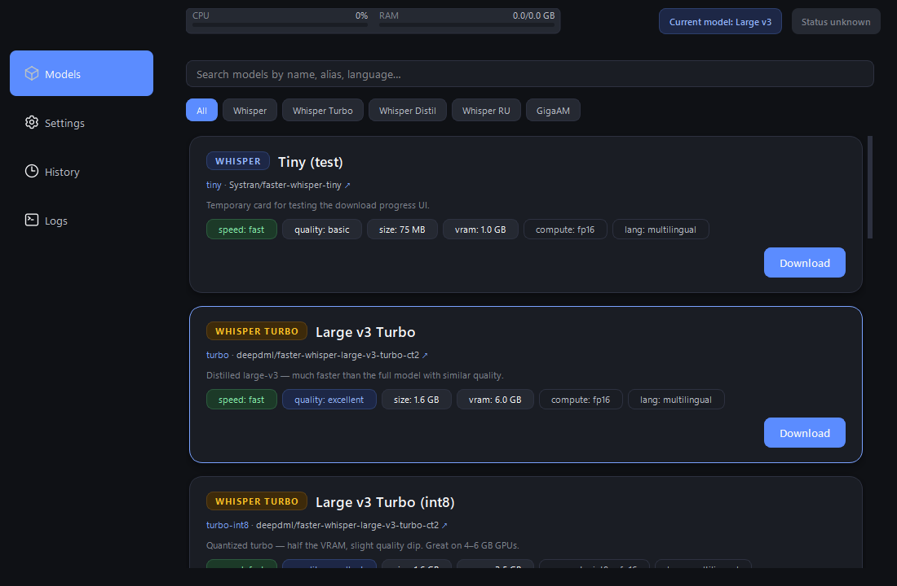
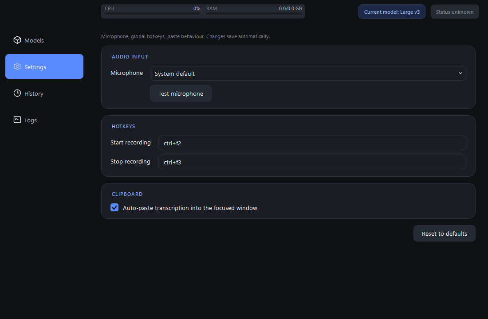
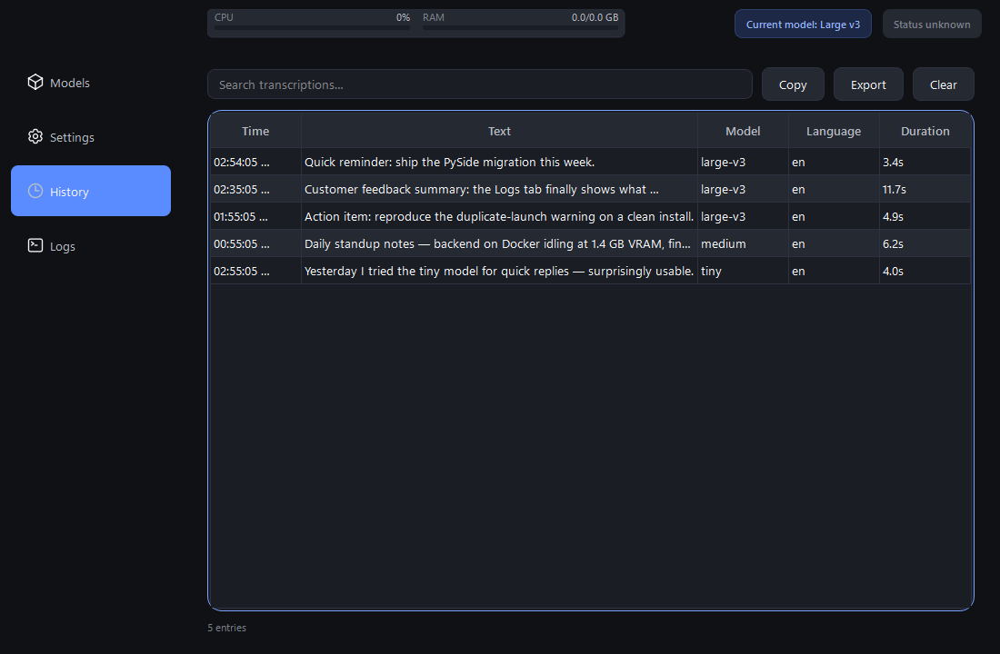
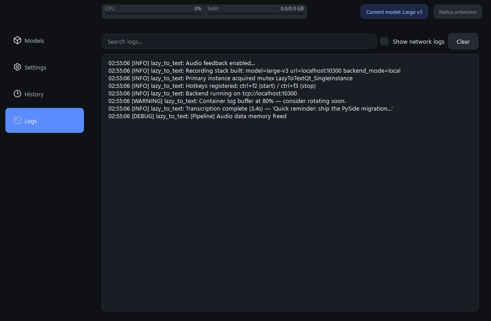

Audio stays on your machine
Recording, encoding, and inference all happen in-process. Model weights download once from Hugging Face / Sber's CDN and live in your local cache. The internet is never involved during transcription.
Lazy to Text records audio on a global keyboard shortcut, transcribes it locally through faster-whisper or Sber's GigaAM running in-process, and pastes the result into whatever window has focus. No cloud round-trip, no subscription, no telemetry.

Recording, encoding, and inference all happen in-process. Model weights download once from Hugging Face / Sber's CDN and live in your local cache. The internet is never involved during transcription.
After the first model download the app needs no network connection — useful for trains, planes, and locked-down enterprise laptops.
One-time setup, then transcribe as much as you want. No API keys, quotas, or per-minute billing. Long-form captures over 25 s route through pyannote VAD on GigaAM and Silero VAD on Whisper, no length cap on Whisper.
faster-whisper for multilingual capture, GigaAM (Sber) for
best-in-class Russian. A RoutedBackend facade
picks the engine per model and rebuilds the inner backend
transparently when you swap families.
Each Whisper card surfaces an inline panel — language, VAD filter, beam size, temperature, initial prompt — persisted per alias and pushed live into the running backend. No restart needed. GigaAM cards skip the panel; the engine is end-to-end.
Whisper Tiny / Distil / Turbo (fp16+int8) / Large v3 (fp16+int8), Russian fine-tunes, and GigaAM v3 e2e CTC + RNN-T (with built-in punctuation). Family chips on each card colour-code the lineage.
Ctrl+F2 starts recording, Ctrl+F3 stops and transcribes. Both remappable in the Settings tab. Ctrl+1..4 jump between tabs.
The transcribed text drops into the foreground window via simulated keystrokes. A bottom-right toast confirms with a preview so you can tell at a glance the run succeeded. Toggle off for clipboard-only behaviour.
Topbar widget tracks CPU / RAM / GPU utilisation / VRAM in
real time via psutil + nvidia-ml-py.
Bars colour-code green / amber / red as load climbs.
A slim level bar appears in the topbar while recording, so silent or muted mics show up immediately — no more "why is my transcription empty?" debugging.
Every transcription is persisted to
logs/transcription_history.json, displayed in a
filterable table with a hover tooltip showing the full text.
Double-click any row for a detail dialog with one-button
copy. Export to plain text from the toolbar.
Records colour-coded by level + logger source, with a "Show network logs" toggle that hides httpx / huggingface_hub noise and a search field that filters the buffer on the fly.
A search box plus family-filter chips narrow the grid; an
empty-state placeholder shows up if nothing matches.
Click a card's ↗ to jump to the model's
Hugging Face / GitHub page.
Close button minimises to the system tray instead of quitting. State-aware tray icon mirrors the recording pipeline. Right-click for Show / Quit; left-click restores the window.
A named-mutex check prevents a second copy from registering the same global hotkeys. The duplicate launch shows a branded warning and exits cleanly.




Requires Windows 10/11, Python 3.12, and a microphone. A CUDA-capable GPU is optional but strongly recommended for any model larger than tiny.
git clone https://github.com/aa-blinov/lazy-to-text.git
cd lazy-to-text
uv sync # creates the venv from uv.lock
uv run lazy-to-text-ui # launch the appThe first launch leaves no model loaded — pick one from the Models tab and click Download. Press Ctrl+F2, speak, Ctrl+F3; the transcript pastes into the focused window and a confirmation banner pops up.
TranscriptionBackend Protocol (OpenAI / Groq)Done since the previous draft of this page: live VU meter, live resource monitor, transcription confirmation toast, GigaAM v3 engine + longform support, distilled / turbo / Russian Whisper presets, per-model inference settings, search + family filter on the model browser, history detail dialog, coloured logs view, sidebar icons + Inter font, smooth pixel scrolling throughout.